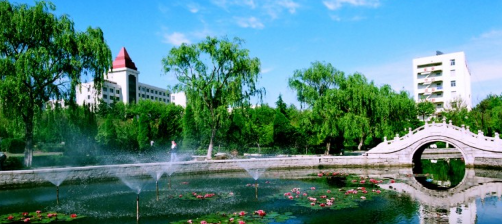

春日的鲁东大学宛如一幅徐徐展开的绮丽画卷，处处洋溢着蓬勃生机。道路两旁的樱花树花开正盛，满树的粉瓣如天边淡粉的云霞，微风拂过，花朵簌簌而落，恰似一场轻盈曼妙的花雨，如梦如幻小草也从地下探出嫩绿。的脑袋，毛茸茸的一片，仿佛给大地铺上了一层柔软的绿毯柳树垂下细长的枝条，新抽出的嫩芽。在阳光的映照下绿意流转，宛如少女柔顺的青丝教室里不时。传来朗朗读书声，与鸟儿清脆的歌声交织在一起，奏响一曲和谐的春日乐章。同学们在校园中或漫步、或讨论学业，脸上洋溢着青春的活力整个校园。被浓浓的春意包裹，充满着希望与憧憬，让人沉醉其中，不舍离去。
鲁东大学的湖边亦是春景迷人湖水在阳光照耀下波光粼粼，仿佛洒下了细碎的金子湖岸边。迎春花金黄灿烂，像点点繁星镶嵌在翠绿的枝条上，香气淡雅，弥漫四周垂柳依依，枝条轻拂着水面，泛起层层微小的涟漪。湖中游船轻轻摇曳，船里的同学谈笑风生，笑声在湖面回荡水中的。鱼儿穿梭嬉戏，时而跃出水面，溅起晶莹的水花远处。青山如黛，与蓝天白云相互映衬，倒映在湖中，宛如一幅绝美的水墨画微风。轻拂脸颊，带着湖水的湿润和花草的芬芳，让人仿佛置身于仙境之中，感受着这春日独有的宁静与美好。
